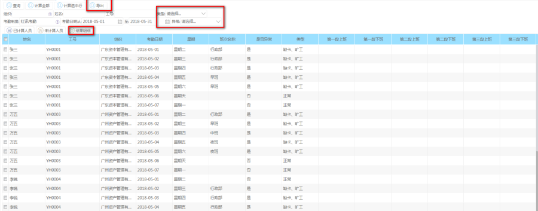
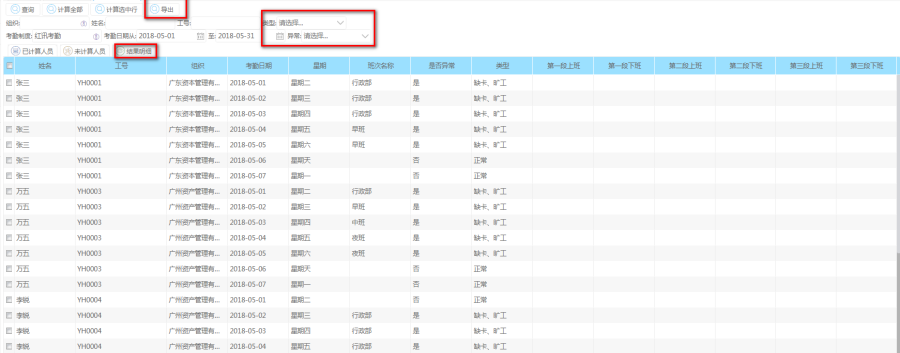

功能描述
对员工的考勤情况进行处理，得到日期内的员工考勤情况
操作步骤
菜单路径：考勤管理--->日常管理--->考勤计算
根据考勤日期查询对应的员工，对未考勤计算的员工进行考勤，可以‘计算选中行’也‘计算全部’
对员工进行考勤计算，需要满足几条件
1>建立了考勤档案的，设置了参与考勤
2>在日期范围内，已设置了排班的员工

计算完成后，点击‘结果明细’页面查看员工的考勤情况，可以导出结果明细，方便人事的查询和核算，也可以根据类型，异常查询员工的考勤信息

对员工的考勤情况进行处理，得到日期内的员工考勤情况
菜单路径：考勤管理--->日常管理--->考勤计算
根据考勤日期查询对应的员工，对未考勤计算的员工进行考勤，可以‘计算选中行’也‘计算全部’
对员工进行考勤计算，需要满足几条件
1>建立了考勤档案的，设置了参与考勤
2>在日期范围内，已设置了排班的员工
计算完成后，点击‘结果明细’页面查看员工的考勤情况，可以导出结果明细，方便人事的查询和核算，也可以根据类型，异常查询员工的考勤信息
